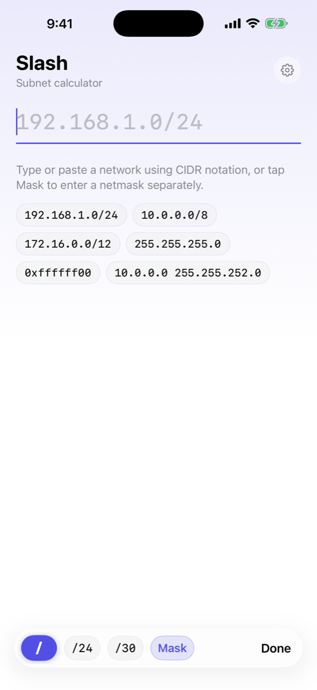
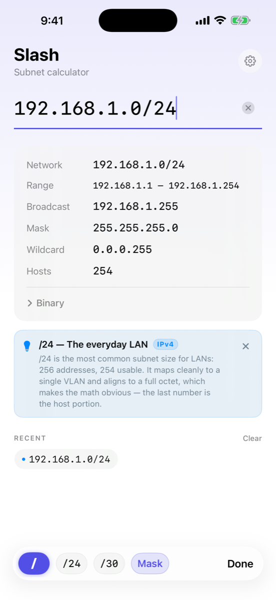
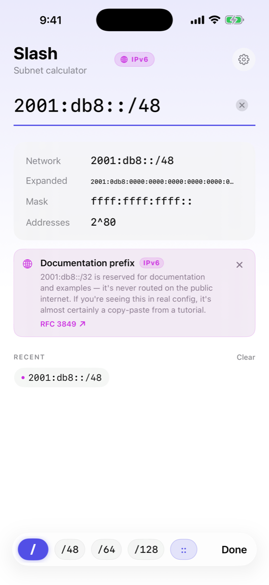
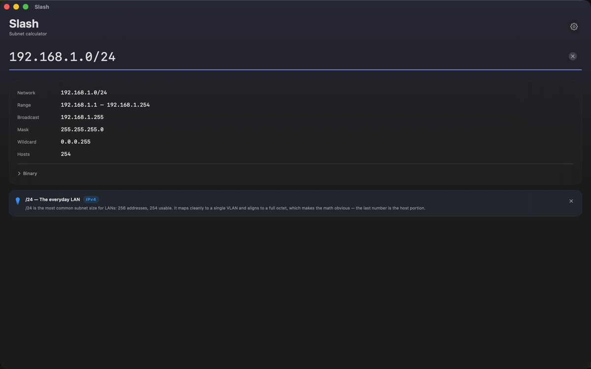

Type or paste 192.168.1.0/24 — see network, range, broadcast, mask, and wildcard instantly. IPv4 and IPv6. iPhone, iPad, Mac. Offline. No tracking, ever.



Slash is a real native app on every Apple platform. No web wrappers, no cross-platform shims. Just a fast, accurate subnet calculator that respects your time and your privacy.
Type or paste a CIDR, mask, or hex notation. Network, range, broadcast, mask, wildcard, and host count populate before you lift your finger.
Copy 192.168.1.1 255.255.255.0 from a config or terminal — Slash auto-splits address and mask. Tabs, NBSPs, and multi-space all just work.
Toggle IPv6 — keyboard, examples, and recents flip with it. /31 honors RFC 3021. /32, hostnames, and partial inputs are handled gracefully.
Tap any /N to see the bit-by-bit breakdown — network bits highlighted in indigo, host bits dimmed. A real teaching tool, not a feature checkbox.
⌃⌘T floats the window above every other app — keep the calculator visible while you read configs, browse packet captures, or jump between terminals.
Fully offline. Verify with Airplane Mode or Little Snitch. No accounts, no telemetry, no third-party SDKs. Not now, not ever.
Buy once, run native everywhere. Each platform gets a real Apple-native build — keyboard accessory on iPhone, hardware-keyboard friendly on iPad, menu bar and float-on-top on Mac.

Privacy isn't a feature. It's the default.
I'm an active CCNA and a working network engineer. I built Slash because every other subnet calculator on the App Store either looks like a 2010 web form, makes a network call to compute something that should run in 50 microseconds, or both. The wedge here is design, speed, and Apple-native polish — not feature count.
Universal Purchase across iPhone, iPad, and Mac.
Questions, feature requests, or bug reports? Reach out anytime:
Effective date: April 27, 2026
Slash collects nothing. The app runs entirely on your device with no network connection, no account, and no third parties.
None. Slash does not collect, store, or transmit any personal information.
This data never leaves your device. If you delete the app, it's gone.
Slash does not collect personal information from anyone, including children. The app is rated 4+ and is safe for all ages.
If this policy changes, the updated version will be posted here with a new effective date.
Questions about this policy? Email tyler.dix@gmail.com.